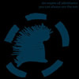

Klemflastic Sound
Klemflastic Sound provides mastering services specifically tailored to the strengths of both digital and analog playback. We are fully capable of mastering in contemplation of a master for either a glass CD or vinyl lacquer.
Klemflastic Sound sees mastering as a balance of both technical and artistic decisions to ready an artist's recording for mass production. By analyzing the recording in a controlled, high fidelity environment, adjustments can be made to improve the program's clarity and impact, as well as create a comprehensive/cohesive 'flow' to a record. This is accomplished via a variety of methods that focus on frequency, dynamics, and stereo field/width, in addition to sequencing, establishing fades, and checking the master disc for errors. While considerations must be made in regards to the final format (uncompressed digital or vinyl, for example), signal-processing decisions are also based on (and ultimately decided by) the artist's aesthetic.
Patrick Klem has taught audio engineering at multiple colleges, provided community DIY production workshops/tutorials, rebuilt a studio, and served in a variety of consultative roles. Past clients repeatedly comment on his technical focus and creative abilities as an engineer, as well as his solid work ethic and adaptability. As an independent engineer with over 15 years experience, Patrick readily takes the time to work with clients on all aspects of mastering decisions until the visualized end product is reached. There is no 'one size fits all' process, or a 'my way or the highway' approach. Patrick Klem focuses on engendering the artist's aesthetic by combining technical acumen with detailed communication, which results in a "stellar sounding end product." Complete client satisfaction with the final recording is the ultimate goal at Klemflastic Sound. Read more about Klemflastic Sound's work from clients.
Why Master?
Mastering is not just for large budget professional recordings. As audio technology becomes more widely available, far more recordings are being created in sub-optimal conditions. Consequently, professional mastering has become an indispensable link to an excellent sounding record. Mastering helps an album reach its full potential in a number of ways:
Mix evaluation
Mixes are evaluated in a sonically clean, purpose-built space. The dedicated mastering environment (high-fidelity signal chain, accurate monitor placement and room treatment) often reveal details and aspects of the track that are not readily apparent during the mixing process. (If there are issues that are best addressed in the mixing stage, and remixes are still an option, we will walk the client through the steps to create better mixes.)
Error correction
Digital noise, be it clicks, crackling, or drop-outs can be corrected. Degraded analog recordings can often be restored to reveal clarity and detail masked by distortion.
Sonic improvement
We apply processing (under the 'first do no harm' credo) that ensures the record will be as robust (tonally, dynamically, spatially and temporally) as possible on the widest variety of playback systems, from earbuds to car speakers to audiophile setups. Well researched processors are used to apply equalization, compression, expansion, limiting, de-essing, stereo field editing, etc. to best serve the artist's intentions. Attention to detail and the support/extension of the artist's intent and aesthetic is paramount.
Creation of a cohesive narrative
Fades, transitions, and leveling ensure songs flow naturally from each other. This is especially important when songs are recorded or mixed in multiple environments.
Quality control
Mastering is your last chance to catch any errors that may have been missed during mixing. Errors range far and wide, from incorrectly interfacing multiple digital devices (word clocks) to C2 errors on the production master CD. Masters that leave Klemflastic are ready for error-free replication (CDs) and lacquer cutting. We prepare masters that are trouble-free for the lacquer cutter or CD replication plant. To boot, we follow through with the lacquer cutter to ensure the mixes are reproduced as accurately as possible, and are also happy to evaluate test pressings on a true reference phonograph system.
Isn't all this done at the plant?
Most indie label vinyl records are created as a 'flat' cut. This means the lacquer cutter will adjust the program for the vinyl medium if there are glaring issues that wreak havoc on the cutting stylus (e.g., wide stereo image in the low Hertz, strong transients > 7kHz, etc.), but nothing else. Although this process is technically called 'mastering', it offers NONE of the benefits described here. More info on the vinyl medium is available here
Work

Maria Kapel
Pavilion PVL-010
12" vinyl
“I have worked with Patrick Klem for releases from many bands, including Six Organs, Magik Markers, and Basalt Fingers. Each time has gone off without a hitch and the final product turned out seamless and much more listenable than what I presented him with.
My Pops (an audiophile extreme and hears shit I could never hear...) compared the unmastered and mastered versions - it sounds GREAT thru his big ol set up. Immediately my pops was all 'oh yeah! BIG difference! BIG difference!'”
— Ben Chasny, member of Six Organs of Admittance, Magik Markers, and Basalt Fingers
Not the spaces you know, but between them
Three Lobed Recordings 080
12" vinyl x 4 + 7" box set
“I had the pleasure to work with Patrick Klem on the mastering of my new CD, "Maelstrom from Drift". I didn't have the opportunity to sit with Pat in person for this record, which made the job of mastering all the more critical. Patrick was great at conveying to me what he had done to each track, and how it affected the sound. Our communication couldn't have been smoother, and it made my task of assessing the mastered tracks that much easier. I must say that most importantly he has a great set of ears and each track on the CD came back much improved! I'm looking forward to working together again soon!.”
— Lee Ranaldo, member of Sonic Youth, solo projects
Lapidary
alt.vinyl av021
12" vinyl
“It was a pleasure working with you. After relating to you on a personal level, I trusted your ability to really understand our sound. That's a key element for me. Also your ability to use very simple language to describe the intricacies of sound editing was totally appreciated! I'll go wild mushroom hunting with you anytime!”
— Marcia Bassett, member of Zaïmph, Un, Double Leopards, GHQ, Zaika, many collaborations...
Red Sugar
alt.vinyl 032, 12" vinyl x 2
Sub Rosa SR 315, CD
“The dialogue and decision-making process between us was very fast, completely honest, without ego, without laziness, and never left me waiting without knowing what will happen next - just pure efficient collaboration. Whenever I ask him about his decisions, he can always explain the acoustical/technical and emotional/aesthetic answers to the tiniest detail. Patrick Klem should be a 'must be' for your CD and vinyl. I loved working with him and I hope we will work again together in the future.”
— Xavier Klaine, member of Winter Family
http://www.winterfamily.com
Your First Ever River
Arbitrary Signs 005
12" vinyl
“Patrick Klem has worked with us on various projects. Starting with our CD "For The Great Slave Lakes" which got a number of good reviews mentioning the clean, crisp quality of the sound - something Mouthus and company are not known for. He brought out a lot of definition to the record as well as elimination of a lot of the unnecessary low end rumble. During the work on this first project together, Patrick exhibited a keen ear for assessing the music and pinpointing what needed to be worked on to make the record stronger based on the aesthetic of the recording. He asked us questions that obviously made me feel like he listened closely and was trying to understand not only the music but the feel of the recording. Since then, we have used him on almost all the projects following that record. He has a good grasp on our music and style of recording. We have referred others to work with him based on our experience with his work and the versatility he displays.”
— Brian Sullivan, member of Mouthus & United Waters
Country Stash
Three Lobed Recordings 076
12" vinyl
“Any time that one of my releases needs mastering, the only name that comes to mind is Patrick Klem. Over the years we have worked together on numerous projects and every single time he has given me even more reason to look to him and him alone. My artists rave not only about Patrick's technical skills and the stellar sounding end product, but also the high degree of communication that he holds with them throughout the entire mastering process.My eyes shall never wander.”— Cory Rayborn,Three Lobed Recordings, projects include Lee Ranaldo, Six Organs of Admittance, Mouthus, Jack Rose, Yellow Swans, Tarentel, Idyll Swords (ex-Polvo), Basalt Fingers, Howlin' Rain, Magik Markers, D. Charles Speer & The Helix, Steve Gunn
Honest Strings: A Tribute To The Life And Work Of Jack Rose
Thrill Jockey distribution
Digital Download
“Patrick added the right amount of pixie dust needed for the recording.”— Jack Rose
Record Store Day 2011
Immune Recordings 017
7" vinyl
“I am grateful to the friend who recommended that I take my new solo album "Boerum Palace" for Three Lobed Recordings to Patrick for mastering. I really needed help to improve the sound quality on certain tracks, and Patrick made some very helpful suggestions. His technical expertise and keen ear for the music was exactly what I was looking for to help make these recordings sound better. I knew what I wanted to do, but couldn't verbalize it technically. Patrick understood my intentions and his suggestions were clear and helpful, something I can take with me on future recording projects. I will certainly work with Patrick again on future projects and will recommend him to those who are looking for an intuitive, solid mastering job. His final master was better that I could have hoped for; he allowed this record to reach its full potential.”
— Steve Gunn, member of GHQ, solo projects
Anahita (Tara Burke & Helena Espvall)
Arcana En Cantos
alt.vinyl av022, 12" vinyl (mastering)Axoltol
Of Bonds In General
Our Mouth 26, 12" vinyl (mastering)Derek Bailey, Tony Bevan, Paul Hession, Otomo Yoshihide
Good Cop Bad Cop
No Fi Records NEU011, CD (mastering)Basalt Fingers
LP
Three Lobed Recordings 039, 12" vinyl (mastering)
Marcia Bassett & Helena Espvall
Lapidary
alt.vinyl av021, 12" vinyl (mastering)Birds of Avalon
Live at Kings - DVD
Volcom Entertainment (recording and mixing)Burning Star Core
Crystal Castles
No-Fi Records NEU007, 10" vinyl (mastering)Burning Star Core
Rrrecycled
No-Fi Records NEU009, 10" vinyl (mastering)Evan Caminiti
West Winds
Three Lobed Recordings 082, 12" vinyl (mastering)
CantwellGomezandJordan
Hot Licks and Rhetoric
307 Knox Records 018, CD (recording and mixing)CantwellGomezandJordan
Live at Cat's Cradle 8.17.08
CyTunes digital download (recording and mixing)
Cleared
Cleared
Immune Recordings 014, 12" vinyl and cassette (mastering)
Comets On Fire & D. Charles Speer & The Helix + Wooden Wand
Not the spaces you know, but between them 4xLP box set # 3
Three Lobed Recordings 080, 12" vinyl (mastering)
Cousins of Reggae
Methridge
Our Mouth 5, CD (mastering)
Gareth Davis & Steven R Smith
The Line Across
alt.vinyl av014, 12" vinyl (mastering)
Herb Diamante & Friends
A Spoonful Of Yeast
No-Fi Records NEU017, CD (mastering)Herb Diamante & Friends
Mr Lonely (w/ Sun City Girls) b/w In New Moon's Lull (w/ Diatric Puds)
No-Fi Records NEU016, digital download (mastering)
Double Negative
Live at Cat's Cradle 8.17.08
CyTunes digital download (recording and mixing)
Dutch Courage
EP
Self-released CD (recording and mixing)
Emeralds / Pain Jerk
European Tour 2009
No-Fi Records NEU015, CD (mastering)Eskimo King / Afternoon Penis
split LP
Abandon Ship Records ASR058.2009, 12" vinyl (mastering)Eternal Tapestry & Bardo Pond
Not the spaces you know, but between them 4xLP box set # 4
Three Lobed Recordings 080, 12" vinyl (mastering)
Expo 70
Where Does Your Mind Go?
Immune Recordings 011, 12" vinyl x 2 (mastering)
Expo 70
Journey Through Astral Projection
Immune Recordings 012, CD (mastering)
Fag Static
Ficcanaso
Room 10 Collective 01, 12" vinyl (recording, mixing, and mastering)
Fing Fang Foom
Live at Cat's Cradle 8.17.08
CyTunes digital download (recording and mixing)
Gold Standard
EP
Room 10 Collective 03, CD (recording and mixing)
Gold Standard
LP
Room 10 Collective 04, (recording, mixing)
Steve Gunn
Boerum Palace
Three Lobed Recordings 054, 12" vinyl (mastering)
Steve Gunn
Sundowner
Harvest Recordings HRV-006, 12" vinyl (mastering)
Gunn - Truscinski Duo
Sand City
Three Lobed Recordings 083, 12" vinyl (mastering)
Steve Gunn & Ilyas Ahmed
Record Store Day 2011
Immune Recordings 017, 7" vinyl (mastering)Howlin' Rain
Wild Life
Three Lobed Recordings 054, 12" vinyl (mastering)Hush Arbors & Key Demo
Not the spaces you know, but between them 4xLP box set # 5
Three Lobed Recordings 080, 7" vinyl (mastering)
Idyll Swords
Purposeful Availment EP
Three Lobed Recordings 008, CD (mastering)In The Year Of The Pig
Jamon
Holidays for Quince Records, CD (mastering)Jackal Blade
Lid
No-Fi Records NEU012, 12" vinyl (mastering)Kill
Discography
Unreleased CD (mastering)Kill Spiders
Burning Village, Raped Horse & Stab, Stab, Stab
Self-released CDs (recording, mixing)Langtry
Title TK
solo record (recording)Langtry
Title TK
full band record (recording)
Magic Babies
Live at Cat's Cradle 8.17.08
CyTunes digital download (recording and mixing)
Magik Markers
Gucci Rapidshare Download
Three Lobed Recordings 051, CD (mastering)Maple Stave
EP3
Self-released CD (recording and mixing)Chieko Mori
Title TK
Smeraldi Rima 0XX, 12" vinyl and CD (mastering)
Mouthus
Divisionals
Ecstatic Peace 34C, 12" vinyl (mastering)
Mouthus
Follow This House
Important Records IMPREC121, CD (mastering)Mouthus
For The Great Slave Lakes
Three Lobed Recordings 029, CD (mastering)
Mouthus
Untitled
No Fun Productions 018, 12" vinyl (mastering)Mouthus / Bulbs Emerald Isle
Mouthus/Bulbs Emerald Isle
Important Records IMPREC255, 12" vinyl (mastering)Mouthus / Yellow Swans
Live on Conan Island
No-Fi Records NEU010, 12" vinyl (mastering)
Mouthus / Yellow Swans
Conan Island
Weird Forest Records 012, 12" vinyl (recording)
MV&EE
Country Stash
Three Lobed Recordings 076, 12" vinyl (mastering)
One Ensemble Orchestra
Other Thunders
No-Fi Records NEU013, CD (mastering)
The Organ Lady
Takes Requests
Self-released CD (recording and mixing)
Pigeons
Visions of the Valley
Soft Abuse 043, 7" vinyl (mastering)Polvo
Live at Cat's Cradle 8.17.08
CyTunes digital download (recording and mixing)
Rachel's
Systems/Layers
Quarterstick Records 075, 12" vinyl and CD (field recording)Lee Ranaldo
Maelstrom From Drift
Three Lobed Recordings 048, CD (mastering)Raveonettes
Two songs on Live EP
Sony/BMG digital download (recording and mixing)
Jack Rose
Black Dirt
Three Lobed Recordings 066, 12" vinyl (mastering)Various Artists
Honest Strings: A Tribute To The Life And Work Of Jack Rose
Thrill Jockey distribution (mastering)
Shipping News / Metroschifter
split EP
Initial Records 25, CD (recording)
Sightings
Future Accidents
Our Mouth 25, 12" vinyl (mastering)Six Organs of Admittance
Maria Kapel
Pavilion PVL-010, 12" vinyl (mastering)Six Organs of Admittance
'Empty the Sun' Soundtrack
Barnacle Books, Drag City distribution, 12" vinyl and CD paired with the book (mastering)
Six Organs of Admittance
You Can Always See the Sun
Three Lobed Recordings 004, CD (mastering)Sonic Youth & Mouthus
Not the spaces you know, but between them 4xLP box set # 2
Three Lobed Recordings 080, 12" vinyl (mastering)
Sonny Smith
Tomorrow is Alright
Soft Abuse SAB039, 12" vinyl / Fat Possum FP1225 CD (mastering)
Sonny Smith
Broom & Dustpan b/w ESP
Homeskillet Records HSR-7-001, 7" vinyl (mastering)Sonny Smith
Death Cream
Soft Abuse SAB003, 7" vinyl (mastering)Sunny & The Sunsets
Hit After Hit
Fat Possum 1240, 12" vinyl and CD (mastering)Tiago Sousa
Walden Pond's Monk
Immune Recordings 016, 12" vinyl (mastering)
D. Charles Speer & The Helix
Distillation
Three Lobed Recordings 072, 12" vinyl (mastering)Spirit Of The Positive Wind
LP
Smeraldi Rima 0XX, 12" vinyl (mastering)Sun City Girls & Steve Gunn
Not the spaces you know, but between them 4xLP box set # 1
Three Lobed Recordings 080, 12" vinyl (mastering of Gunn side)
Sunglasses
Bad Happy
Darkwolf Recordings 002, CD / Trans Ruin Recordings 001, 12" vinyl (mastering)
Superchunk
Live at Cat's Cradle 8.29.08
CyTunes digital download (mixing)
Tarentel
Fear of Bridges CD EP
Three Lobed Recordings 007, CD (mastering)TWIN
EP
Label TK, Format TK (recording, mixing, and mastering)United Waters
Your First Ever River
Arbitrary Signs 005, 12" vinyl (mastering)
Various Artists
Live at WVFS
Self-released CD (recording, mixing, production)
Yellow Swans
Descension
Acuarela NOIS063, CD / Three Lobed Recordings 038, 12" vinyl (mastering)
Yellow Swans / Burning Star Core
Untitled
Blossoming Noise PYG07VIN, 12" vinyl (mastering)Winter Family
Red Sugar
alt.vinyl 032, 12" vinyl x 2 (mastering), Sub Rosa SR 315, CD (mastering)
Gear
Klemflastic is mastering for the people; a stronger record at a modest price.
Some mastering houses with expansive gear lists churn out amazing products. Conversely, there are just as many that butcher the mixes. Gear lists are secondary to an engineer's inherent knowledge, abilities, and communication. Of course, mastering does require certain high-end baseline equipment and an excellent environment in which to work, but we highly encourage you to have a talk with any potential mastering engineer to look beyond an expensive gear list (and rates!).
Room
Mastering requires an excellent sounding acoustical environment. Without it, the engineer is, hyperbolically, driving in a sandstorm. An (arguably ridiculously) obsessive amount of time was placed on creating the most neutral room possible to operate Klemflastic. Through measuring, consulting, bass traps / sound absorption of various types, diffusors, and too much math, we've created a room that is free from flutter echo without bass build up, has excellent stereo imaging, and affected a large reduction in any peaks and nulls in the frequency response of the room.
Recorders/Playback
- Pro Tools (Digi003, all A/D and D/A stages bypassed), various 2 channel editors
- Otari DTR-8S DAT-R
- Plextor Premium CD-R drive with Plextools error checking software
Monitoring Chain
- Focal Solo6 Be
- Lynx Aurora 8 channel A/D D/A w/ optical card
- Passive monitor control box (calibrated)
- Sennheiser HD600, Audio Technica ATH-M50 & AKG K 240 headphones
- PPA v2 headphone amp w/ Sigma 11 PSU, balanced (Jensen) and unbalanced input
Processors
- Foote P3S Mastering Edition compressor
- Dangerous Baxandall EQ
- Gyraf Gyratec XIV Parallel Passive Tube EQ (arriving October 2011)
Analog
- Assortment of plug-ins - almost all are double-precision/64 bit floating point, such as PSP's Neon HR (high resolution linear phase EQ), Mastercomp (transparent compression), oldTimer (analog character compression), and Xenon (limiter)
Digital
Phonograph & Cassette System
- Technics SL-1200MK2SE (KAB mod'd) w/ KAB/Ortofon ProS cartridge w/ STY30 stylus
- Single-ended triode phono preamplifier by K & K Audio
- Nakamichi cassette deck
{kind=link}
{kind=link}
{kind=link}
{kind=link}
{kind=link}
{kind=link}
“I have been fortunate in my life to appear on a good number of records, on a fairly wide selection of fine labels. I have been lucky to work with many excellent mastering engineers whose works are renown around the globe. Patrick Klem is one I have worked with very recently and his work measures up to any and all bar none. He has an incredibly perceptive ear and was able to bring out the elements I was looking for, with a bare minimum of instruction. His shaping of the final product was such that it took on a vibrancy and life that even surpassed my high expectations.” — Dave Shuford,
member of D. Charles Speer and the Helix, No Neck Blues Band, Enos Slaughter
View all quotes...
Patrick Klem
klem at klemflastic dot com
“Any time that one of my releases needs mastering, the only name that comes to mind is Patrick Klem. Over the years we have worked together on numerous projects and every single time he has given me even more reason to look to him and him alone. My artists rave not only about Patrick's technical skills and the stellar sounding end product, but also the high degree of communication that he holds with them throughout the entire mastering process. My eyes shall never wander.”
— Cory Rayborn,
Three Lobed Recordings
Projects include Lee Ranaldo, Six Organs of Admittance, Mouthus, Jack Rose, Yellow Swans, Tarentel, Idyll Swords (ex-Polvo), Basalt Fingers, Howlin' Rain, Magik Markers, D. Charles Speer & The Helix, Steve Gunn
View all quotes...
Format
We accept CDs/DVDs and DATs. Analog tapes can be accepted with advance notification. Mixes should be printed as 24 bit word length, and use whatever sample rate it was originally recorded at (i.e., don't up/downsample it); we can accept sample rates up to 192kHz. Audio CDs or 44.1kHz/16 bit files are fine, they just provide a lower resolution. Data files are preferred to audio CDs, however, do not create a data CD by creating data files from the audio CD ('ripping' the disc). Only send data files that are created by mixing ('bouncing to disk' in Pro Tools). We can accept stereo interleaved or dual mono. Please mix them in a consistent manner, i.e., no varying sample rates, bit length, or file formats (make them all '*.wav' or '*.aiff'). Do not send anything in a lossy format (e.g., mp3s).
Content
Above all else, please leave some headroom in the mixes - i.e., keep the levels from peaking at -0.0dB (no clipping/red on the meters). Ideally, the mixes won't exceed -6dB (with an even lower RMS). The more you excessively limit (or compress) the mix in order to increase volume, the more you constrain the mastering process, as well as the cutting engineer's ability to do anything but create a quieter and more distorted record! We will ensure the final product is at a 'competitive' volume / holds up fine next to other modern records, but also retains life and dynamics. Additionally, if going to vinyl, it's a good idea to mind the stereo image of the low frequencies. Keeping low end content more in the center of the stereo field allows for a louder cut and helps avoid skips in a record. Of course, if a wide stereo image is important to the song, leave it as is - it just means the record will have to be cut at a lower volume. Stereo image has no affect on digital formats (CDs, mp3s, etc.). More info on the vinyl medium is available here.
Content (cont.)
A squashed mix is essentially unmasterable. EQ (which practically every song will benefit from) will add grainy distortion to a heavily limited mix, regardless of whether the EQ is additive or subtractive. EQ will not help add any punch or depth to the recording at this point. Furthermore, EQ changes the wave's crest ratio, so a heavily limited mix will only come back quieter (or have to be limited again = double the distortion). Clipping and limiting should always occur after EQ, if ever. Abuse of limiters is one of the most common (and easily preventable) sources of lousy sounding music.
Delivery
Files are accepted electronically or via postal service. If sending electronically, please zip files (this ensures good file integrity), and use a web-based FTP app like Sendspace to upload them. If you are keen on Dropbox, we are happy to set up a folder to share, which is also nice for easy retrieval of samples of the mastered tracks. Private FTP service will eventually be available as well. If sending through postal service, please contact Klemflastic Sound for the mailing address.
Please include a txt file of any notes you have for the mastering process - be sure to include track order! This helps us work closely with each artist to make sure we're engendering his/her goals for the mastering process. While we can certainly work without input, it's never a bad thing to have information about specific ideas or goals for the mastering process, fades and transitions, etc.
Questions?
We are happy to answer any questions to help ensure your mixes are well prepared for the mastering process. Feel free to drop us a line. There's no obligation or fee here - we consider this working towards the greater good of improved audio fidelity.